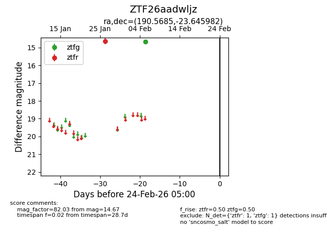
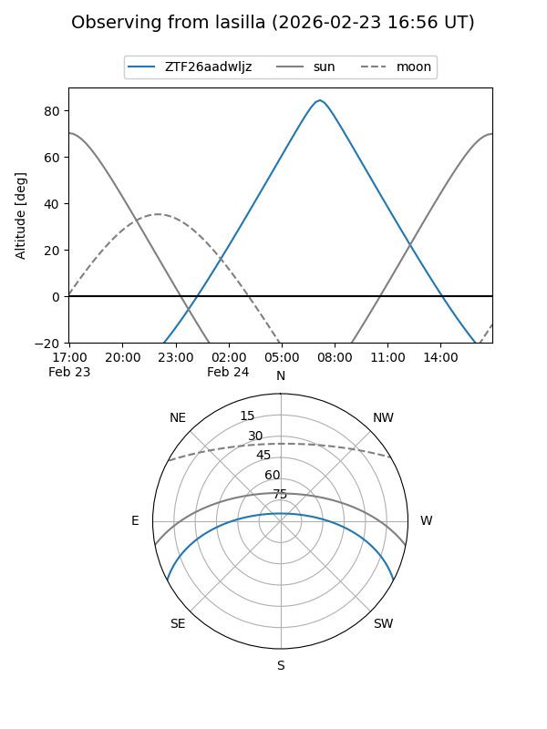
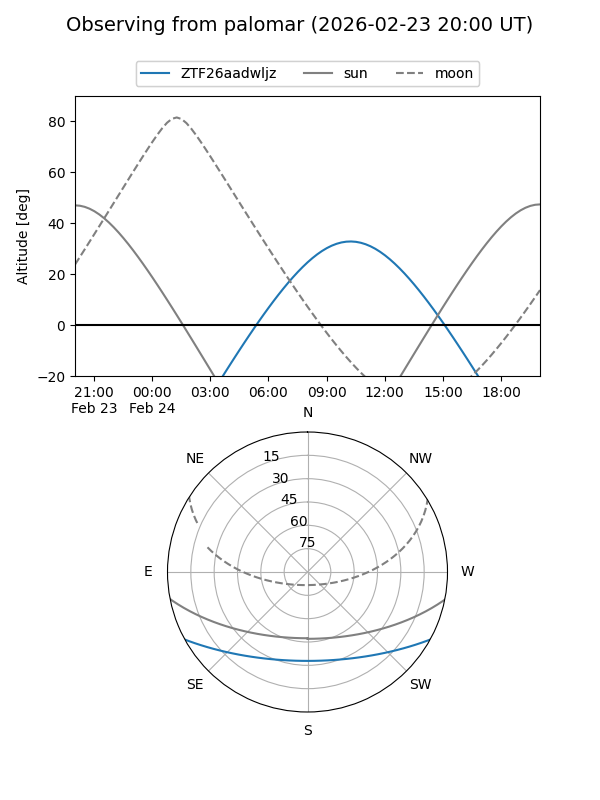

ZTF26aadwljz
Target ZTF26aadwljz at 2026-02-24 09:08
Aliases and brokers:
FINK: link
Lasair: link
ALeRCE: link
alt names
ZTF26aadwljz (ztf,fink_ztf)
Coordinates:
equatorial (ra, dec) = 190.5685,-23.64598
equatorial (HMS+DMS) = 12:42:16.43,-23:38:45.54
galactic (l, b) = (300.2244,+39.17758)
Flags:
Photometry:
last ztfg=14.67, ztfr=14.65
1 ztfg, 1 ztfr detections
Lightcurve

Visibility


Additional plots